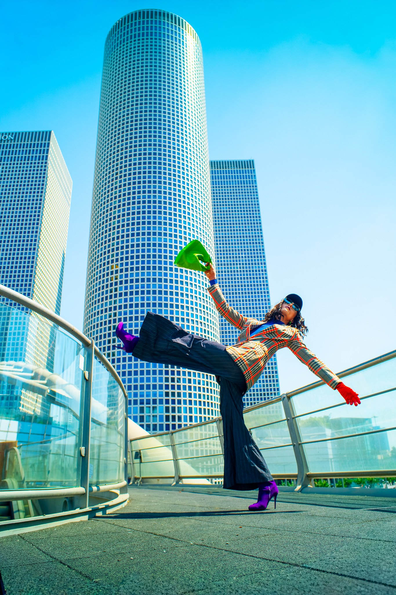
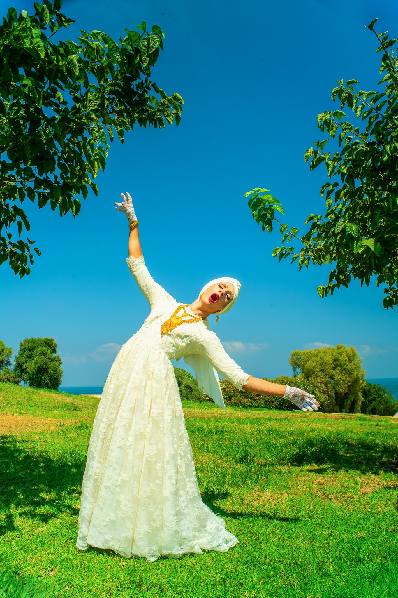
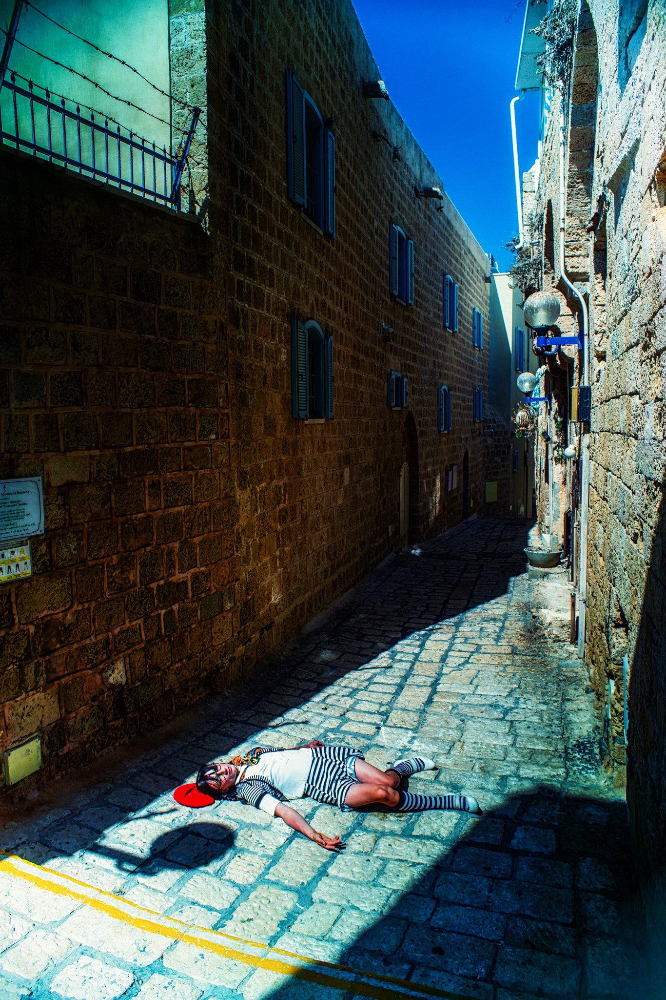

Logline & Concept
Frau Marlene Show is the bold solo project of Nikita Goldman Koch, a young but already renowned performer from Gesher Theatre. Building on his acclaimed drag personas — Dina Vernisebya (Bring-Yourself-Back) and New Frau Marlene — first presented at last year's Genderikia's Drag Show festival, Goldman Koch brings to the stage an original drag performance that blurs the line between cabaret, theatre, and political commentary. The show is dedicated to the theme of womanhood and the persistent dominance of men over women, exploring these dynamics through humor, pathos, and striking gender-bending imagery.
Creative Team
- Creator / Playwright / Lead Performer: Nikita Goldman Koch
- Multimedia & Video Design: Nick Dreyden
- Venue: Tmuna Theatre, Tel Aviv
- Premiere: November 2025 (work-in-progress presentation, ongoing development)
Visual & Multimedia Concept
The performance is structured as a sequence of drag-driven stage numbers, each accompanied by short video clips and visual sequences directed by Nick Dreyden. These films function as intimate glimpses into the lives of Goldman Koch's drag heroines — fragments of memory, confession, and fantasy — projected inside the show as parallel narratives. The video art doesn't serve as background decoration, but as a second stage: a living cinematic diary that deepens the psychological presence of the drag characters. By merging live performance with screen-based storytelling, the production creates a dialogue between embodied presence and mediated identity, highlighting how gender and power are both performed and imposed.
Significance
This collaboration marks a milestone for both artists: Goldman Koch expands his drag language into full-length theatre, while Nick Dreyden's multimedia direction shapes the production into a hybrid of cabaret and visual art. Frau Marlene Show positions itself at the cutting edge of Israeli experimental theatre, a work-in-progress already gathering attention as one of the most daring pieces of the 2025 Tmuna season.
Gallery


